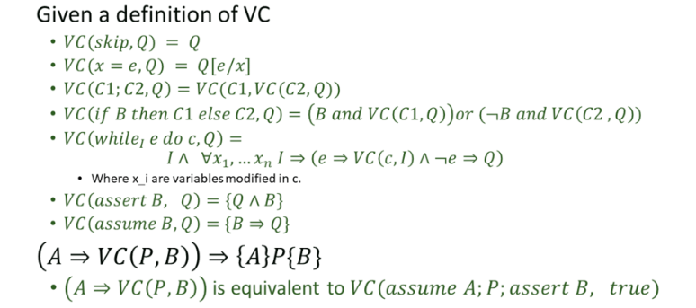

Program Synthesis 2
Lecture 10: Introduction to functional synthesis.¶
-
从现在开始，我们需要了解spec的形式更加丰富的时候的程序合成。这里可的合成方法可以被称为functional synthesis，除此之外还有其他的合成方法例如reactive synthesis(在运行过程之中随着输入输出动态调整)等。
-
通常来说，我们需要面对3个主要的问题，建立spec的形式，正确性验证以及确定搜索策略。有些搜索策略会将正确性验证深度嵌入，确保最后生成的程序一定是正确的，有些策略则选择将搜索与验证完全解耦合，使得其各自独立解决。也有一些方法利用正确性约束指导搜索过程，并使得所生成的程序易于验证。
-
传统的spec形式是分为precondition与postcondition。我们对于问题的描述常常会存在不准确或者不直观的问题，此时可以借鉴多态的思想，例如传递给synthesizer一个可能不完备的condition，然后又继续传递一个例子，使其能够明白真正的意思。
-
high level地说，我们有4种方式确保程序正确性
- constraint-based techniques based on symbolic execution
- abstract interpretation,
- type-based analysis
- deductive verification.
-
基于constraint的技术可以简单地看作对于任意的输入IN，要求程序满足\(Q(IN)\)。这一类的方法包含generating verification conditions，bounded model-checking等。不难发现，引入更多的参量来对程序进行限制有利于合成出我们想要的程序，但是过多的参量比较难以处理。一种想法是参量替代，但是比较难以进行。
当下可以采取的方法一般是参量消除或者Counterexample Guided Inductive Synthesis(CEGIS)。参量消除通常可能会导致在消除参量的过程之中导致spec的size指数级膨胀，但是有时它也会带来一些简化。而且这种思路也可以作为尝试其他策略之前的预处理。
-
CEGIS的逻辑很简单，就是不断试图找到当前程序的一个反例，然后利用这个反例大大缩减程序空间，直到最后无法找到反例。但是这种思想却非常通用，它将inductive synthesis与 expressive specifications以及valiadtion结合在了一起。
-
但是CEGIS只适用于一个反例可以否决掉大量可能程序的例子之中，如果反之，一个反例只能否决掉一个程序，而我们需要考虑的程序又有很多，那么CEGIS会非常低效。究其原因，这是因为CEGIS处理verification的思路仍然是需要从一个极大的空间之中寻找，如果我们可以将synthesis过程设计得易于验证，那么效率或许将有极大的提升。
Lecture 11: A brief introduction to constraint-based verification.¶
-
我们需要更加形式化地表达对于目标程序的限制关系，从而对于一个程序的性质进行验证或证明。我们需要引入公理语义来表述程序的逻辑信息。定义\(\{A\}cmd\{B\}\),表示从满足A的状态出发，经过cmd指令，如果可以终止，程序一定可以达到满足B的状态，这个叫做partial correct，（因为不保证终止）。\([A]cmd[B]\)在之前的基础之上，保证程序一定可以终止，这也可以叫做full correct。
-
可以定义以下的推导规则：
其中横线上方的命题如果都得到满足，就可以退出横线下方的命题。当我们想证明的\(\{A\}cmd\{B\}\)的cmd是由多个基础指令拼接而来的，就可以反复应用上述规则对于待证明的命题进行拆分。但是对于循环，想要找到满足条件的A通常是很困难，并且只能由人工完成的一件事。
-
直接进行推导通常会涉及许多的人力投入，因此可以引入另一种更加自动化的方法。我们定义weakest precondition(wpc)为使得某个命题成立的最弱的条件，即\(\forall A, (\{A\}cmd\{B\})\Rightarrow (A\Rightarrow wpc(cmd,B))\)。这样如果能够快速找到求wpc的方法，我们就可以迅速验证从当前状态出发可否得到目标性质。简单的求wpc的方法如下
-
但是这对于循环来说仍然难以解决，所以我们需要引进verification condition(vc),这是一个比wpc更强的条件，也就意味着我们依然可以通过\(A\Rightarrow vc(cmd,B)\)来表明命题成立。具体到对于循环，可以如下来求出vc 但是注意到这里的I是一个关于循环的常量，而且通常需要我们给出，因为虽然I任意取都可以，但是如果取得不好就会导致vc所要求的precondition过于强，甚至是无法满足式，对于我们的证明就无助了。因此这需求人工给出一个足够精确的I
Lecture 12: From Verification Conditions to Synthesis Conditions.¶
-
我们之前通过vc来完成了对于程序的限制，但是vc保证sound却不保证accurate。正如之前所说，如果I取得不好可能导致我们找不出precondition，从而无法完成证明。因此可以探索合成对于循环之中invariant I的准确表述。 
-
我们可以将I表示为关于所有（与之相关）变量的一个函数，返回一个布尔值。并且将vc里面的要求转化为harness test，然后就可以让sketch来帮我们求出对应的I。不对sketch对于变量之间的组合方式以及bounded varification的范围取舍比较有限。
-
这种自动合成循环不变量的方法还可以用于其他应用，例如可以据此证明从一段JAVA代码与自动生成出的SQL代码的等价性，从而开发出自动从JAVA生成SQL的系统。并大幅度提升执行效率。
-
进一步地申发这种思想，我们除了合成一个invariant之外，也能够合成一个完整的程序。例如“Proof Theoretic Synthesis”（PTS），我们可以对其输入一个程序的“脚手架”，表述了程序的循环结构，以及期望的pre/post-condition，以及一些其他的限制条件。
这个项目的主要贡献是：
- 发现synthesizer倾向于生成循环体，导致程序永不终结，因此partial-correct是不够的，我们需要将程序终止加入合成要求之中
- 采用了parallel assignment，即尽量将变量的赋值整合在一起，使得当某个前提条件满足的时候，可以对于多个变量同时赋值，以避免其赋值顺序可以交换所带来的对称性问题。
- parallel assignment还可以限制程序的分支结构，使其更加可控，以便于生成vc语句即使condition与赋值语句都还没确定。
Lecture 13: Functional Synthesis with Sketch¶
-
前面讲到可以利用harness测试自动找出循环不变量从而完成对于循环的证明，但是有时候这样做会要求生成的代码比原有的代码更加复杂，因此可以改为使用循环/递归展开来处理。

具体地说，如果事先不知道循环会进行多少层，那么就将其展开一个特定的层数，并且内嵌到原有的代码之中，如果发现超出了层数，就会直接assert false（但不能assume false，这会导致将否命题加入条件之中，使得程序每次想要生成代码，就直接生成一个超过层数的，这样推任何命题都为真）。
-
之前还提到过CEGIS对于一个counter example只能处理掉少数可能的取值的情况效果不好，更加具体地说，由于举一个反例通常除了input之外还需要举出中间变量的值，这就导致反例容易举出但是适用范围较窄。
形式化的来说，\(\exists \phi, \forall in,tmp,\;P(\phi,in,tmp)\Rightarrow Q(\phi,in,tmp)\)是程序合成的目标，但是给定一个IN 作为反例，与其寻找到\(\phi\)使得上式成立，不如根据数理逻辑，找到tmp使得P不成立，这样同样可以达到目标。
-
基于此，可以将上式改写为\(\exists \phi, \forall in,\exists tmp,\;P(\phi,in,tmp)\wedge Q(\phi,in,tmp)\)，这样虽然不用对任意tmp都满足，但是至少要求存在tmp满足P。这会将找出tmp的任务也交给synthesizer，从而避免上述情况的出现。不过，verification过程还是要用到原来的约束。
-
sketch借鉴了上述的思想，并应用于model一个复杂函数，通过对于一个uninterpreted function施加限制，其中uninterpreted function即对于相同的输入，总是具有相同的输出，这样的函数。例如 这种模块可以解决CEGIS无法很好工作的情况。
Lecture 14: Introduction to SMT.¶
-
在SAT的基础值之上，我们还需要接触到Satisfiability Modulo Theory Solvers，即SMT solver，它可以处理包含更多谓词种类以及变量关系的可满足性问题。
-
首先定义theory就表示一系列预先确定的公理，它们为所有的谓词与函数赋予信息。SMT的目的就是找到在特定theory之下的某一个公式，是否存在使其满足的特定赋值。为此又需要借助两个概念：Linear integer arithmetic以及Equality with uninterpreted functions。
- 前者处理只包含加运算(乘法，减法等也可以化作加运算处理)以及>,=等简单比较谓词的整数运算系统，目前已经有足够好的算法来进行解决。
- 后者利用前文提到的uninterpreted function(UI)的性质，即输入一样必然有输出一样，来进行涉及函数运算的相等判定，例如下图之中，通过一系列复杂的推导，推出了矛盾。
-
Nelson Oppen算法是解决SMT问题的算法，其核心思想是首先进行purification,即将整个公式拆分为若干个子公式的交，可以通过引入新的变量来使得子公式尽量简单，例如\(f(a+b,2)\Rightarrow f(c,2)\wedge c=a+b\)。然后对这些子公式应用上述两种方法进行equality propagation，即相等关系的推导与传播，直到最后找出解或者推出矛盾。
这个方法是sound的，因为它如果发现矛盾，那就肯定有矛盾，但不见得是complete的，因为可能有一些矛盾无法被发现。例如
\[ x\geq 1\\\\ x\leq 2\\\\ f(1)\neq f(x);\\\\ f(2)\neq f(x); \]在x是整数的情况之下，这显然是无法满足的，但是为了推导出x等于1或2，我们还必须要求这一套理论具有凸性，即从\((x=1)\vee(x=2)\)之中它必须能推出其中某一个成立，而不能因为没办法完全确定就停止推导。现实之中我们可以采取回溯搜索的方法来解决这一问题，例如当x的取值不多的时候，就将每种赋值都尝试一次，看看能否推出什么。
-
除此之外，另一种解决SMT问题的思想是利用SATsolver来解决，例如对于以下公式： $$ f(x_1)\neq f(x_2)\\ x_1 =a\vee x_1=b\\ x_2=a\vee x_2=b\\ a=b $$ 如果用一个布尔值来替代相等关系，就可以转换为 $$ \neg t_1\\ t_2\vee t_3\\ t_4\vee t_5\\ t_6 $$ 如果转换之后的公式\(B_F\)都无法满足，那么之前的公式也肯定无法满足。
为了给予转换之后的公式更多的信息，可以考虑尽可能将原有的等价推导信息尽可能用布尔表达式表示出来，例如\(t_6\Rightarrow(t_2\Rightarrow t_3)\),然后将所有这些布尔表达式也加为限制条件，就可以得到与原问题等价的SAT问题。但是这样做通常吃力不讨好，因为要将原问题的信息全部用布尔表达式提取出来是很费时费力的事情，因此另一种思想是增量式的对其进行寻找。
-
DPLL(T)算法的思想正是如此，他的想法有点类似于CEGIS。
首先将SMT按照上述方式转化为一个初始的SAT问题，然后交给SAT来求解，如果无解当然就肯定无法满足。反之SAT给出了所有布尔表达式的一种赋值方式\(t_1=true,t_2=false...\)，可以让SMT solver来看能否让原问题满足这一赋值，当发现可以的话求解就完成。反之说明这种布尔表达式的赋值方式是错误的，将其取反\(\overline{t_1}\vee t_2\vee...\)加入SAT的限制之中。重复上述过程即可。
DPLL(T)有若干优化的思想，例如让SMT solver更高效的由布尔表达式进行求解或推出矛盾，以及尽可能利用较少的布尔表达式赋值就推出矛盾（能否只知道\(t_1,t_2\)的值就推出矛盾？）然后将尽量简短的布尔表达式加入SAT限制之中（\(\overline{t_1}\vee t_2\)够吗？），使得每个反例能够更大程度的缩小搜索空间。
Lecture 15: Expressive Types.¶
-
之前我们见识到了类型系统可以帮助enumerative synthesis的过程进行剪枝，它的作用有点类似于物理学中的量纲，除了帮助我们进行简化之外，本身并不能进行太多的计算与推导。但是如果对于类型进行细化，得到refinement type，或许可以提供更多的功能。
-
定义\(\{v:B|P(v)\}\)表示一个细化类型，为类型B之中所有满足谓词P的元素（感觉相比于一个类型更靠近于“同种元素的集合”这一概念）。
这里定义了一个简单的类型系统，并且有一些初始规则，来进行类型推导，但是仅凭这些初始规则依然推导不出太多有用的信息，为此还必须要引入子类型subtype的概念。
-
定义\(T_1<:T_2\)表示子类型关系，即任何需求\(T_2\)的场合都可以用\(T_1\)类型的变量来替代，这样我们就可以通过子类型关系的推导来完成。
不过感觉这也很类似于之前的constraint-based verification过程。
-
这种细化类型允许我们在类型检查的时候能够检查出能加复杂的性质，例如以下例子：
\(Nil\rightarrow Nil\)这个步骤出现了错误，但是如果我们只知道返回值是list的话就无法检查出来，但是将列表长度添加进类型属性之中，就可以在静态分析阶段发现并报出这个错误。
Lecture 16: Synthesis with Refinement Types.¶
-
上文之中提到refinement type可以帮助我们做类型检查，因此合理推断，也可以将这一技术应用于程序合成之中，帮助我们排除掉不需要的程序，完成剪枝。
-
一种常见的类型检查技术是*Bidirectional typechecking*。简单的理解这种方法，就是它既会top-down propagation,又会bottom-up propagation。例如我们有：
那么首先会将第一行的type signature应用到其参数之上，检查a,b的类型，然后根据a,b的取值推断返回值类型是否是我们所需要的。
-
另外一种类型检查技术是round-trip type checking。它的核心思想是类型检查可以被不断细化，以下面这个例子说明：
按照之前的Bidirectional typechecking方法来看，我们为了知道返回值的类型，需要先知晓每一个参数的类型以及取值。但是round-trip typechecking可以直接跳过这一步，先试一下粗略的要求能否满足返回值，并且利用返回值的信息进一步推断对于参数的限制，如果限制不能满足，那么就可以直接报错，否则再进一步细化要求。
在这个例子之中，即使不知道x,xs的值，也可以直接检查返回值
Cons h (insert x ...)是否是SList（这个类型是一个sorted list,其中的元素升序排布）。然后根据Cons的语义以及其返回值的信息，推知insert x ...也必须是一个SList {v:e|v>=h}即所有元素不小于h的sorted list。由于在程序合成之中可能出现目前未知的hole，即我们暂时不知道填什么，比如这里的... 所以我们希望对此情况，type checker也能尽量作出判决。对此的检查Bidirectional typechecking只能一一枚举...之中可能的内容。但是round-trip typechecking可以根据insert返回值的类型
SList {v:e|v>=h}，以及insert本身的语义信息，推知x的类型是{v:e|v>=h}，然而x本身的类型并不满足，因此这里可以直接报错。毫无疑问，这样的类型检查方式更为高效。
-
一个已经基于refinement types实现的程序合成系统是Synquid，他设计的核心思想是首先利用top-down enumerative search，在其中通过Round-trip type checking思想来剪枝。
除此之外，它还引入了类似于STUN（先合成一个程序，然后对于无法满足的input再合成一个程序，最后将二者结合起来）的思想。但由于没有concrete input，只能先找到一个weakest predicate P,使得我们可以合成一个程序\(C_t\)在这个假设之下工作。然后考虑P为假的情况，将其加入条件之中，重复上述步骤，直到找出\(C_f\)在此时工作，最后通过\(if(P)C_t\; else\; C_f\)这样的方式将其结合起来。
Lecture 17: Deductive Synthesis¶
-
deductive synthesis(演绎合成)是另外一种程序合成的泛式，如果说之前介绍的方法思想都是不断缩小搜索空间，直到找到合适的解，那么演绎合成的思想就是通过施加一系列变换规则，从原始程序得到一个更加高效的实现。
-
下面是一个很简单的程序合成系统：A Transformation System for Developing Recursive Programs。
对于一个简单的斐波那契函数： $$ \begin{align} f(0)&=1\\ f(1)&=1\\ f(x)&=f(x)+f(y) \end{align} $$ 我们知道如果不考虑用数组来存储之前得到的结果的话，其时间复杂度是\(O(2^n)\)但是我们可以通过一系列规则找出一个更好的程序，复杂度为\(O(n)\)。过程如下：
-
euraka step:引入一个新的函数\(g(x)=<f(x+1),f(x)>\)
-
instantiation:引入新的实例，即将自变量x变成一些其他表达式，然后代入原式得\(g(x+1)=<f(x+2),f(x+1)>\)
-
unfold:利用之前定义的规则展开表达式\(g(x+1)=<f(x+1)+f(x),f(x+1)>\)
-
abstraction:对于局部表达式或变量重命名：\(g(x+1)=<u+v,u>\;where\;<u,v>=<f(x+1,f(x)>\)
-
fold:逆用之前的转换规则引入新的函数调用：\(g(x+1)=<u+v,u>\;where\;<u,v>=g(x)\)
如此我们就找到了求g(x)的线性算法，随后再用g(x)来求f(x+1)即可
-
-
在1979年有学者提出了更为普适化的方法，着力于从high level的逻辑表达式直接生成出高效的实现。简单地来说，对于某时刻存在如下形式的程序：\(f(in)\Leftarrow expr\),其中expr表示在某个条件之下要进行何种操作，然后通过一系列保证正确性的转换方式对于expr不断进行变换，最后得出一个保证正确并且较为高效的程序。例如以下的规则
-
empty lists:对于空集l,任何对它的所有元素有某种要求的谓词P都为真\(P(all(l))\Rightarrow true\)
-
conditional formation:对于某个谓词P，可以对其divide and conquer: $$ S\;where\;Q\Rightarrow if(P)\;S\;where(P\wedge Q)\ else\;S\;where(\neg P\wedge Q) $$
-
non empty lists:对于某个list的所有元素有某种要求P的话，可以将其拆分为首元素与其他元素分别作要求： $$ P(all(l))\Rightarrow P(head(l))\wedge P(all(tail(l)))\ if\;l\;not\;empty $$
-
recursive call formation：类似于之前提到的fold,观察此时的程序之中是否有某些组件符合函数调用的形式，并尽量用函数调用替换原先的组件。
这篇文章阐释了一系列演绎合成的优势，例如*correct by construction*，即这个程序合成系统本身就保证了程序的正确性，因为它的每一步变换都维护了原有的语义信息。而非如同CEGIS一般，依赖于verification来保证最后合成出的程序是正确的。
-
-
在历史上，演绎合成的应用遇到了诸多的困难，例如我们对于某个程序状态，可能很难得出当前应该应用哪一条转换规则，比如在上述的conditional formation规则之中，可能就无法确定该对于哪一个谓词P进行分支。因此演绎合成对于大型程序可能要经历一段级长的时间，结合上搜索剪枝等策略才能得到结果。而且对于某一项任务，通常会添加很多heuristic的策略或规则来帮助整个系统运作，这不但对人工的需求大，而且也不易迁移任务。
当然也有不少较为成功的应用，例如spiral system，演绎合成被用于合成信号处理操作，例如快速傅里叶变换和其他线性变换等的结合。对于这些narrow domain，人们通常可以方便地定制domain-specific transformation rules，这也就让演绎合成得以大展拳脚，快速合成出超过人工专家的高效方案。
（未完待续~）